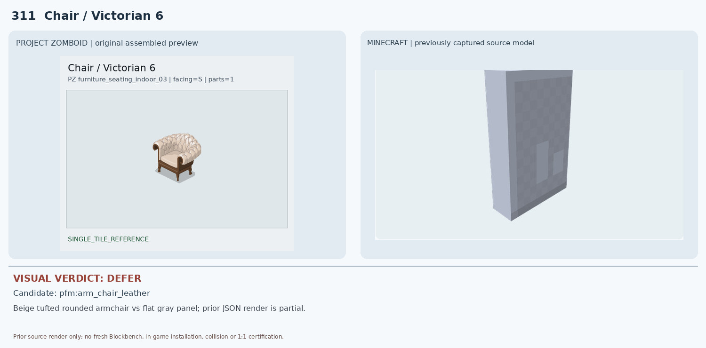
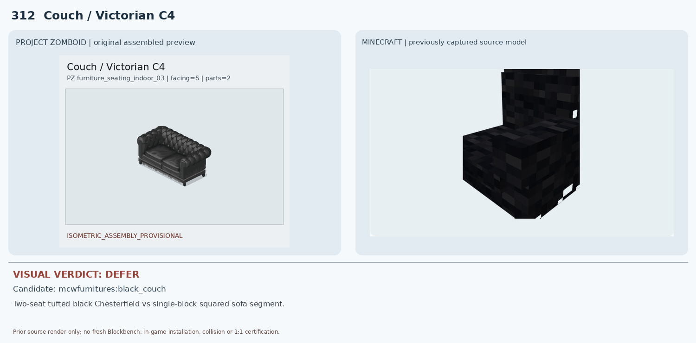
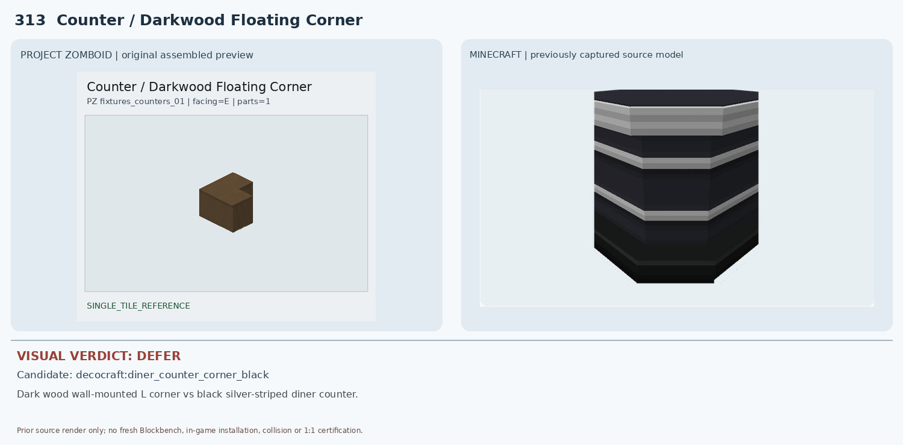
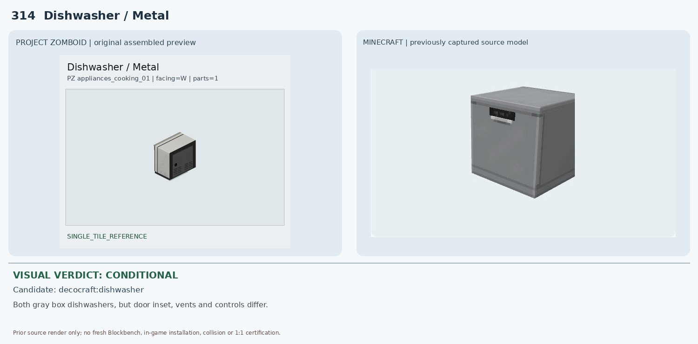
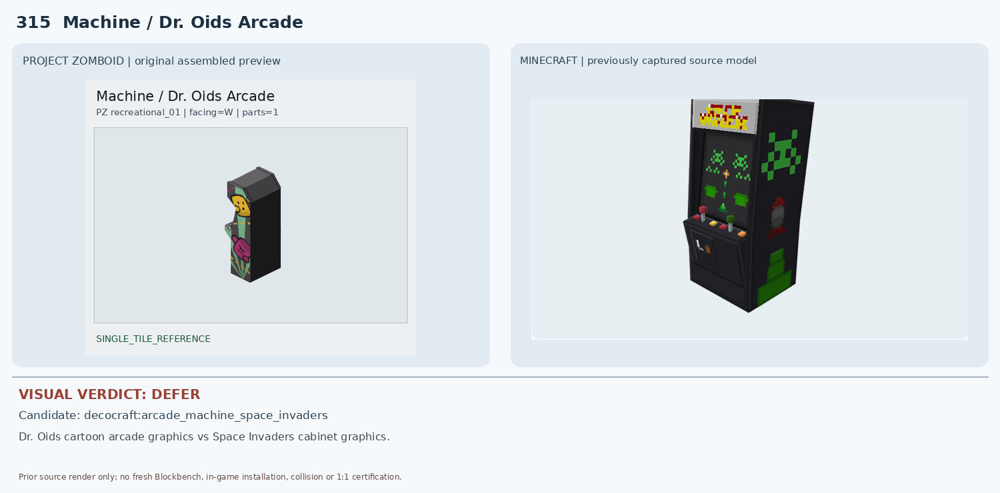
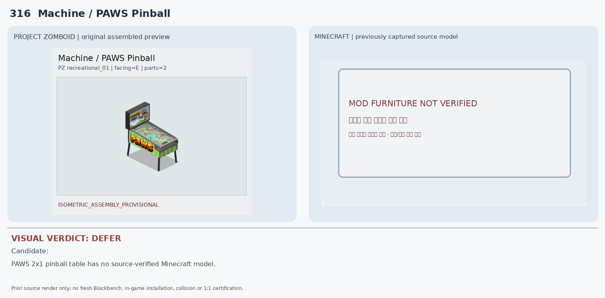
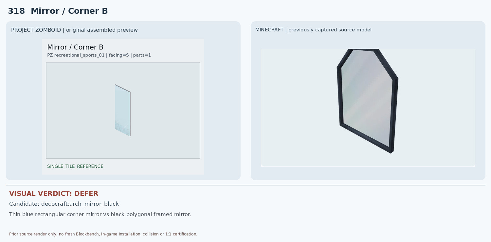
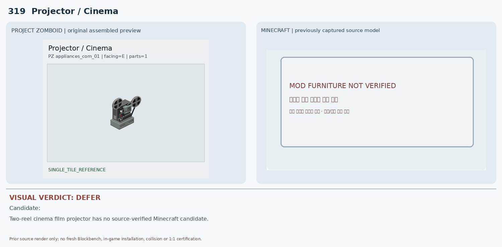
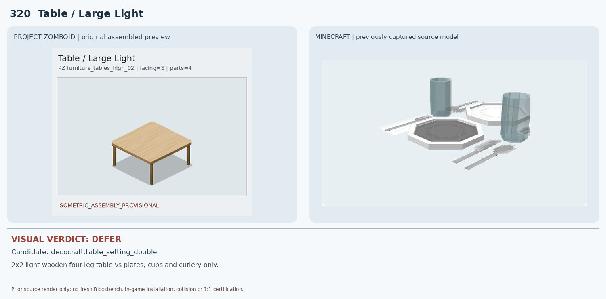

311 Chair / Victorian 6 — DEFER

PZ는 빅토리아식 베이지 버튼터프팅 안락의자. 기존 Minecraft 이미지는 회색 평판/벽면 형태만 나타나 좌석·팔걸이·다리·쿠션이 확인되지 않는다. 원본 JSON 부분 렌더이므로 실제 가구 외형 비교 불가능.
1 conditional, 9 deferred. Existing source render evidence only; no new native render or in-game certification.

PZ는 빅토리아식 베이지 버튼터프팅 안락의자. 기존 Minecraft 이미지는 회색 평판/벽면 형태만 나타나 좌석·팔걸이·다리·쿠션이 확인되지 않는다. 원본 JSON 부분 렌더이므로 실제 가구 외형 비교 불가능.

PZ는 2×1 검정 가죽 체스터필드 소파로 둥근 팔걸이와 버튼 장식이 뚜렷하다. Minecraft 후보는 각진 검정 단일 소파 블록/부분 모듈이며 원본의 2좌석 길이·팔걸이·터프팅을 재현하지 않는다.

PZ는 나무 상판이 꺾인 짙은 갈색 벽부착 코너 수납장이다. 후보는 검은색 본체와 은색 가로 띠의 바닥형 다이너 카운터로 재질·설치 높이·색상·구조가 모두 다르다.

PZ와 Minecraft 후보 모두 회색 직육면체 식기세척기 형태여서 구조적 유사성이 있다. 그러나 PZ는 넓은 검정 전면 사각 패널과 하부 통풍구, 후보는 회색 전면도어와 상단 작은 조작부/손잡이여서 전면 구성과 비율이 다르다. 인게임 기능·충돌 미검증.

양쪽 모두 직립형 아케이드 캐비닛이지만 PZ의 노란 얼굴·분홍 캐릭터/문양과 후보의 초록 스페이스 인베이더 픽셀 그래픽은 완전히 다르다. 상단 장식과 조작부, 측면 디자인도 불일치한다.

PZ 원본은 PAWS 로고가 있는 2×1 핀볼 기계로 경사판·백박스·다리가 모두 보인다. 기존 비교 이미지에는 Minecraft 모델이 없다고 표시되어 실제 원본 모델 대조 자체가 불가능하다.
PZ는 얇은 회색 테두리의 높은 직사각 평면 거울이다. 후보는 두꺼운 검은 다각형 아치 프레임으로 상단 모양·프레임 두께·재질이 다르다. 벽부착/반사 기능도 미검증.

PZ 코너 B는 얇은 테두리와 푸른 유리의 직사각 거울이며 A와 배치 방향만 다르다. Minecraft 후보는 317번과 동일한 두꺼운 검은 아치 거울이라 외곽 형태와 프레임 색이 맞지 않고 A/B 방향 대응도 검증되지 않았다.

PZ는 좌우의 원형 필름 릴이 뚜렷한 구식 영화 영사기다. Minecraft 후보 이미지가 'MOD FURNITURE NOT VERIFIED'로 비어 있어 비교할 실제 3D 모델이 없다.

PZ는 밝은 원목 2×2 식탁 전체와 네 다리다. Minecraft 후보는 접시·컵·수저 세팅 소품으로 식탁 본체/다리가 전혀 없다. 2×2 멀티타일 구조도 대응하지 못한다.